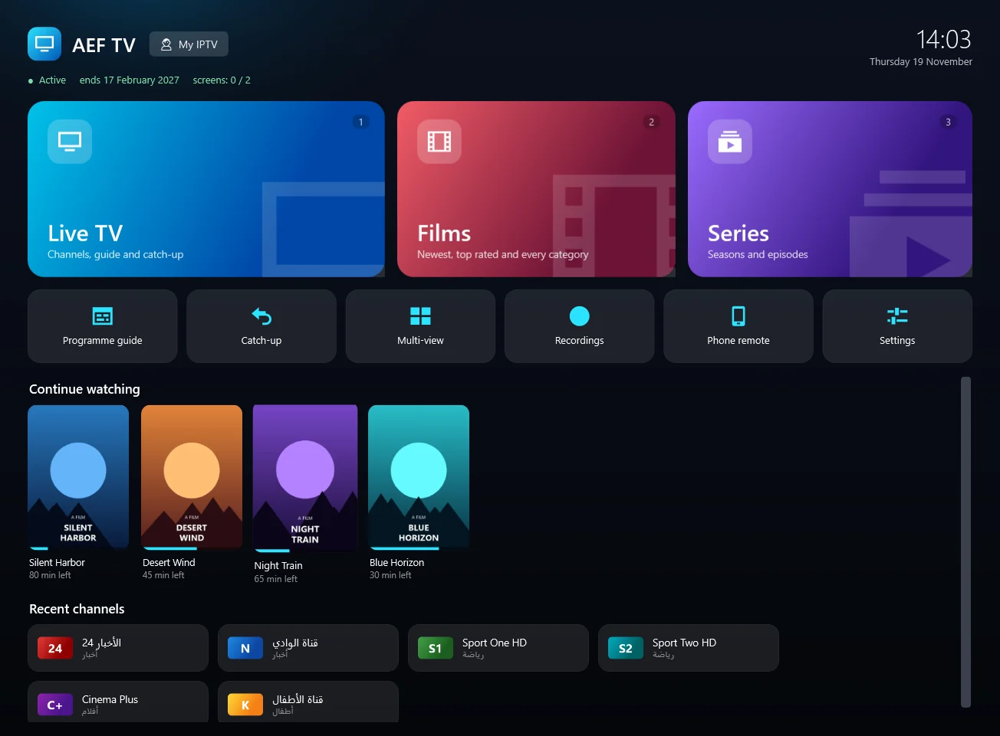

Help
Install
- Download AEFMediaPlayer-…-Setup.exe from the latest release.
- Run it, pick a language and follow the steps.
- If Windows shows Windows protected your PC, click More info, then Run anyway.
On first start the player asks for your language and look, and whether it should open your videos. Requirements: Windows 10 (1809 or newer) or Windows 11, 64-bit.
Updates: once a day the player checks for a new version; it downloads it in the background, verifies it, and installs it when you close the player. To be asked first: Settings → turn off "Install updates by themselves".
IPTV and the home screen
Adding an account
- Press Ctrl+T (or Media → IPTV accounts) → Add account.
- Choose User name and password and type the server address and details your provider sent, or choose Channel list link (m3u) and paste the link.
- Click "Check and save".
The password is stored encrypted on this PC and never written to any file or log.
The home screen

- Ctrl+T opens your account's home: Live TV, Films and Series (or keys 1 2 3).
- At the top: your subscription's state, expiry date and screens; the account button switches between accounts or manages them.
- Continue watching: films and episodes you stopped part-way; they continue from there.
- Recent channels: one click back to a channel you were watching.
Films and series
With posters, plots and ratings: newest, top rated, favourites and every category, with search. A title's page has "Add to favourites".
Channel list files (m3u)
Open the file like any other, or paste the link in Open network stream (Ctrl+N). Logos, groups and the guide appear by themselves.
TV mode

When a channel plays, the player becomes a TV receiver: the video controls and the playlist give way to a channel banner and TV buttons.
- What is on: move the mouse, click the picture, or press Space or I: number, logo, name, what is on and next. It goes away once the mouse rests.
- Change channel: ↑ ↓, or type the channel number. Backspace goes back to the last channel.
- Volume: ← →.
- Channel list: Enter. Groups on one side, the chosen channel's programmes on the other. Arrows move, Enter plays, Esc closes.
- Leaving: T, or the TV button at the end of the bar. To turn it off: Settings → IPTV → "TV mode for channels".
Phone remote
- Press Ctrl+J in the player.
- Scan the code with your phone's camera. Both must be on the same Wi-Fi. The first time, Windows may ask whether the player may use the network: choose Allow (private networks).
- From the remote page you can add it to your home screen: on iPhone, Share → "Add to Home Screen"; on Android, from the browser menu.
- Arrows and OK work like a receiver's remote; the Channels key opens the channel list on the screen, browsed with the arrows, and Back closes it.
- The remote works on your home network only, behind a secret code. "New code" in the remote window cuts off any phone that had the old one.
Programme guide and recording
- Guide: Ctrl+G. Channels on one side, today's programmes on the other.
- Catch-up: programmes that already aired, marked ⏪, play from your provider's recordings; or start the current one from the beginning (if your provider offers it).
- Remind me: pick an upcoming programme and click "Remind me"; a reminder pops up a minute before it starts.
- Record: Ctrl+R records what is playing. In the guide, pick a programme and click "Record": the player switches channel and records it (leave the player open). Recordings go to Videos → AEF Media Player → Recordings.
Multi-view and channel locks
- Two or four channels at once: Ctrl+U, or right-click a channel → "Watch with others (multi-view)". Click a picture to hear it; double-click to watch it alone.
- PIN locks: right-click a channel in the list → lock the channel or its whole group. The first time you choose a PIN (4 digits or more). Settings → IPTV changes the PIN or removes all locks.
Playback
- Open a file: drag it onto the player, or Ctrl+O. A whole folder opens as a playlist.
- Resume: films (and films and episodes from IPTV accounts) open where you stopped.
- Seek preview: hover over the seek bar to see a picture from that moment.
- Bookmarks: B marks the moment, Shift+B jumps to the next one.
- Sleep timer: Playback → Sleep timer; the volume fades before it stops.
- Mini player: Ctrl+M, a small window on top of other apps.
Subtitles
- A subtitle file with the video's name loads by itself. Old Arabic subtitle files display correctly with nothing to set.
- Subtitles online: Ctrl+D. A ★ means the subtitle was made for exactly this copy of the video.
- Size, colour and timing: in the Subtitle menu, or G and H for timing.
Library and playing on your TV
- Library: Ctrl+E. Series are recognised from names like
Show.S01E02. - Smart TV: Ctrl+K and pick the TV (on the same network), or "Mirror the whole screen (Miracast)".
Looks, language and accessibility
- Settings: Ctrl+,.
- Language: Arabic, English, French, Turkish, Urdu.
- Looks: dark, light, pure black, slate, and eight accent colours.
- Accessibility: text size (normal, large, larger), high contrast, and button names a screen reader speaks.
Shortcuts
| Space | Play / pause (TV mode: what is on) |
| F / F11 | Fullscreen (Esc leaves) |
| ← → | 10 seconds (TV mode: volume) |
| ↑ ↓ | Volume (TV mode: next / previous channel) |
| Enter / Backspace | TV mode: channel list / last channel |
| T / I | TV mode / channel information |
| M | Mute |
| N / P | Next / previous |
| V | Show / hide subtitles |
| B / Shift+B | Bookmark / next bookmark |
| Ctrl+O / Ctrl+N | Open file / stream |
| Ctrl+T / Ctrl+G | IPTV home / programme guide |
| Ctrl+J / Ctrl+U | Phone remote / multi-view |
| Ctrl+R / Ctrl+D | Record / subtitles online |
| Ctrl+E / Ctrl+K | Library / play on TV |
| Ctrl+, | Settings |
If something goes wrong
- The picture looks wrong or stutters: Settings → Playback → turn off "Hardware acceleration" and try again.
- Subtitles show odd characters: Subtitle → Text encoding → Arabic (Windows-1256).
- A channel does not play: try the channel check, and contact your provider if every channel is down.
- The phone cannot reach the remote: check it is on the same Wi-Fi and that Windows allows the player on the network. If the PC's address changed, scan the code again.
- Still stuck? Help → Report a problem inside the player, or here.